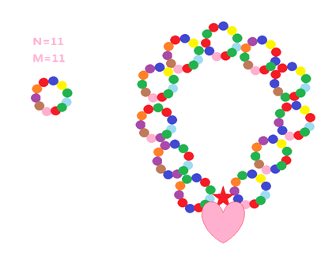

在进香河，流传着这样一段美丽的故事。zyg与kzn是两个生活在进香河的孩子，一天，他们两人闹矛盾了，于是zyg送给了kzn一条精美的爱之项链。从此他们幸福生活在一起。
这则故事的真实性到今天已经没有意义了，然而我们关注的是那一条精美的爱之项链。这是一条由N个精致的戒指与一块特殊纪念品相连而成的环形，如下图中的爱心符号正是一种特殊纪念品。(据说是2012年情人节时zyg特意托人订制的)上面的每一枚戒指又是由M个带磁性的特殊彩色球状物组成的环形。也许你会认为，这所谓的戒指，更像是一条条小项链。
下图给出了一种可行的方案，其中左边描述的是单一的一枚戒指，右图描述的是项链。

这里，所有带磁性的特殊彩色球状物的颜色只有R种，这里我们用1到R来表示。如果一枚戒指可以通过顺时针或逆时针的旋转后与另外一枚戒指相同，则认为这是两枚相同的戒指。
对于一条爱之项链，要求满足任何相邻两枚戒指必须是不相同的。同时，特殊纪念品左右两枚戒指也必须是不同的。
现在给定N，M和R，问究竟有多少种不同的爱之项链。
注意：
1、特殊纪念品的插入位置不同，也许会得到不同的爱之项链。
2、这里我们只考虑旋转后是否相同，不考虑翻转操作，这一点不论是对于每一枚戒指，还是对于整条项链，都是这样的。